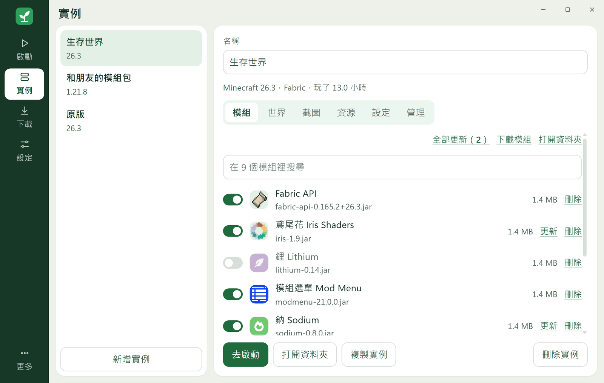
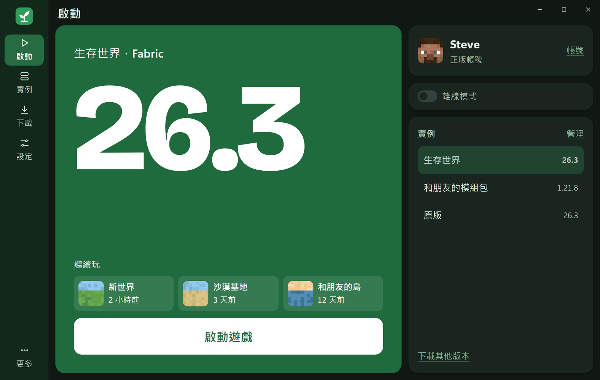
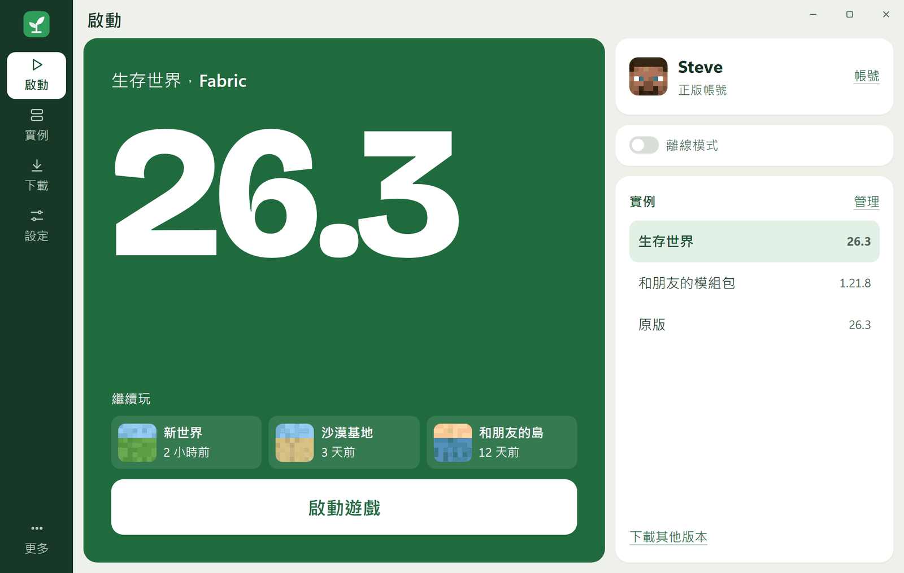

裝完也管得好
模組檢查更新、資源包和光影看得到也刪得掉，截圖直接在啟動器裡瀏覽。把檔案拖進窗口，它會自己判斷該放哪裡。


支援

懸停、按下、換頁都有彈性回應，曲線用彈簧公式算出來。不想要動畫時，跟著系統設定全部關掉。
模組檢查更新、資源包和光影看得到也刪得掉，截圖直接在啟動器裡瀏覽。把檔案拖進窗口，它會自己判斷該放哪裡。
遊戲崩潰時用白話說明原因，並指出可能有問題的模組。
放進資料夾就能用，資料都在旁邊，整個資料夾帶著走。
相同的模組用硬連結共用，用不到的遊戲檔案一鍵清理。
沒有廣告，沒有追蹤。登入憑證只存在 Windows 憑證管理員。
支援鍵盤操作、讀屏軟體和 Windows 高對比模式，有三種介面大小，五種主題的文字對比都達標。
淺色、深色或跟隨系統。拖動看看。
Sapling 是學生的個人專案，沒有購買數位簽章。按「其他資訊」再按「仍要執行」就能打開。程式碼公開，也可以比對下方的 SHA256。
需要。Sapling 不支援盜版，也沒有免帳號登入。離線模式只給這台電腦登入過擁有遊戲帳號的人使用。
登入走微軟官方的裝置代碼流程，密碼不會經過 Sapling。登入憑證只存在 Windows 憑證管理員，不會寫入檔案。
下載會走 Windows 的系統代理。連不上官方伺服器時，請先開啟代理或加速器。
目前只支援 Windows 11 x64。
SHA256